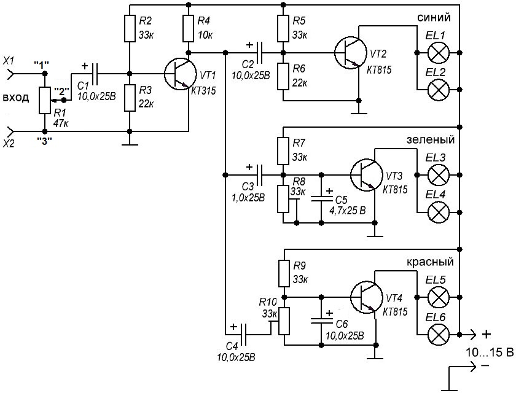
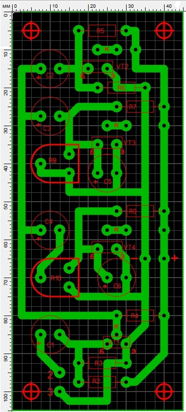

Цветомузыкальная установка на лампах накаливания (вариант 2)
Данная цветомузыкальная установка содержит всего 4 транзистора и десяток резисторов с конденсаторами.

Рис. 1 - Схема цветомузыкальной установки на лампах накаливания
Таблица 1
| Обозначение | Наименование | Номинал | Примечание |
|---|---|---|---|
| С1, С2, C4, С6 | Конденсатор электролитический | 10 мкФ / 25 В | |
| C3 | Конденсатор электролитический | 1 мкФ / 25 В | |
| C5 | Конденсатор электролитический | 4,7 мкФ / 25 В | |
| EL1 - EL6 | Лампочка накливания | EL1 - EL2 - синий, можно заменить светодиодами |
|
| R1 | Резистор переменный | 47 кОм | |
| R2, R5, R7, R9 | Резистор постоянный | 33 кОм / 0,25 Вт | |
| R3, R6 | Резистор постоянный | 22 кОм / 0,25 Вт | |
| R4 | Резистор постоянный | 10 кОм / 0,25 Вт | |
| R8 , R10 | Резистор подстроечный | 33 кОм | |
| VT1 | Транзистор биполярный | КТ315 | С любым буквенным индексом |
| VT2-VT4 | Транзистор биполярный | КТ815 | С любым буквенным индексом |
Питается устройство от низкого напряжения 10-15 В, что позволяет подключать её к источникам музыки даже в автономных условиях.
Все устройство нужно собрать в подходщем корпусе, на котором размещаются кнопка включения питания, три регулятора уровня цветов и сами лампочки (светодиоды). Рисунок проводников печатной платы приведен на рис. 2.

Рис. 2 - Топология печатной платы цветомузыкальной установки
При использовании светодиодов в качестве транзисторов VT2- VT4 можно поставить КТ315, резисторы R5, R7, R9 поставить 120 кОм, при этом светодиоды чуть горят. Резистор R2, задающий усиление входного каскада, нужно подбирать в зависимости от того, куда будет подключаться цветомузыка.